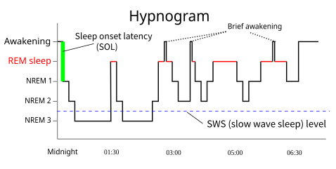

Why do you need to sleep?
You spend a third of your life unconscious and defenseless, and you can't skip it without falling apart. For something that costly, sleep must be doing real work. Here's what the research says it's for.

Sleep is the strangest thing you do, and you do it every single day. For roughly a third of your life you go unconscious, stop eating, stop moving, and lose track of the world. From an evolutionary point of view that should be a terrible idea. An animal that's asleep can't forage, can't defend itself, and can't watch for predators. Any species that could safely drop the habit should have done so long ago.
None of them did. Sleep shows up everywhere we look, from humans to fruit flies, and it can't be skipped. Push it far enough and the body breaks down. So the only conclusion that makes sense is that sleep isn't wasted downtime. Whatever it's doing must be valuable enough to outweigh a third of your life spent helpless. The interesting question is what that work actually is, and since the early 2000s the answers have gotten sharper.
The most expensive thing you do every day
Start with how non-negotiable it is. In a classic and grim line of animal research, rats kept from sleeping entirely sicken and die in about two to three weeks, faster than rats deprived of food. In humans there's a rare inherited disease called fatal familial insomnia, caused by a misfolded protein that slowly destroys the thalamus, the part of the brain that helps switch off wakefulness. Patients lose the ability to sleep at all, and the disease is, as the name says, fatal. You can't tough your way out of needing sleep. The pressure to sleep behaves less like hunger and more like the need to breathe.
That alone tells you something. Biology doesn't pay a steep price for nothing. If staying offline for hours every night has survived hundreds of millions of years of evolution, it must be buying something the brain and body can't get any other way.
Sleep isn't off
The first surprise is that sleep isn't a single flat state. Over a night you cycle through clearly different stages roughly every 90 minutes, and you can see them in the hypnogram above.
There are two big families. Non-REM sleep comes in three stages, from light drifting off down to deep slow-wave sleep, where the brain's electrical activity falls into large, slow, synchronized waves. Then there's REM sleep, named for the rapid eye movements that come with it, where the brain looks almost awake and most vivid dreaming happens. Early in the night you get more deep slow-wave sleep. As the night goes on, the cycles shift toward more REM. The two aren't interchangeable, and the evidence suggests they do different jobs.
Job one, locking in memory
One of the clearest functions of sleep is consolidating memory. During the day you take in far more than you can keep. Sleep appears to be when the brain decides what to hold on to and files it away properly.
The leading picture, built from both human and animal studies, is that the hippocampus, the brain's fast scratchpad, replays the day's experiences during deep slow-wave sleep and gradually hands them off to the cortex for long-term storage. Slow-wave sleep seems especially important for fact and event memory, while REM sleep has been tied to procedural skills and to processing the emotional charge of memories. This is why a night of good sleep after studying beats cramming through the night, and why pulling an all-nighter can wreck recall of what you just learned. You didn't just lose study hours. You skipped the step where the learning gets saved.
Job two, taking out the trash
The second function is more recent and more surprising. Being awake is metabolically messy. Brain cells, like any hardworking cells, produce waste, and that waste has to be cleared. In 2013 a team led by Maiken Nedergaard reported that this cleanup runs mostly during sleep.
Working in mice, they tied that cleanup to the glymphatic system, a waste-clearance network the same lab had named the year before. During sleep, the spaces between brain cells open up by roughly 60 percent, and cerebrospinal fluid flushes through the tissue far more freely than it can in the waking brain, carrying metabolic byproducts away. The brain also lacks the ordinary lymphatic vessels the rest of the body uses to carry waste away, and it guards its border with the blood so tightly (the blood-brain barrier) that clearing waste isn't as simple as it's elsewhere, which is part of why this overnight rinse matters so much. One of the molecules cleared this way is amyloid-beta, the same protein that clumps into the plaques seen in Alzheimer's disease. The finding is still being worked out and was shown in animals, but it reframes sleep in a striking way. Part of what you're doing each night is running a rinse cycle the waking brain can't afford to run while it's busy.
Why you get sleepy, pressure and a clock
So what decides when you sleep? Two systems work together, an idea known as the two-process model.
The first is sleep pressure. The longer you're awake, the more a molecule called adenosine accumulates in the brain. Adenosine is a byproduct of your cells burning energy all day, and as it builds up it makes you feel more and more sleepy. Sleep clears it out, and you wake up with the pressure reset. This is also the secret of your morning coffee. Caffeine doesn't give you energy. It's shaped enough like adenosine to sit in adenosine's receptors without activating them, so it blocks the sleepiness signal. The pressure is still building underneath, which is why caffeine wears off and the tiredness comes back all at once.
The second system is the clock. Deep in the hypothalamus sits a master timekeeper called the suprachiasmatic nucleus, which keeps a roughly 24 hour rhythm and syncs it to daylight. It's why you get sleepy in the late evening even on a day you woke up late, and why jet lag feels the way it does. Sleep pressure says how badly you need sleep. The clock says when you're supposed to get it. When the two line up, you sleep well. When they fight, like during a night shift, you sleep badly even when exhausted.
Sleep isn't time the brain is offline. It's when the brain does the work it can't do while you're using it.
What happens when you can't
Because sleep is doing real maintenance, missing it has real costs, and they stack up fast. Even modest sleep loss measurably slows reaction time, weakens attention, and degrades memory, often without the tired person noticing how impaired they are. Longer term, short sleep is linked to weakened immune response, disrupted metabolism and appetite hormones, worse mood and emotional control, and a higher risk of chronic conditions like heart disease, type 2 diabetes, and obesity. The amyloid clearance story has also tied chronic poor sleep to the long slow buildup that shows up in Alzheimer's, though that link is still being untangled.
The cultural idea that sleep is for the weak, that you can grind through on four hours and catch up later, runs exactly backward. You can't fully repay a sleep debt after the fact, and the deficit doesn't simply vanish. You're skipping maintenance the brain was going to do anyway.
Why it matters
Put it together and sleep stops looking like an inconvenient gap in the day and starts looking like one of the most active, important things you do. While you're unconscious, your brain is sorting and saving the day's memories, flushing out waste it couldn't clear while working, and resetting the chemical pressure that built up all day. None of it can happen while you're awake and using the machine.
We still don't have a single tidy answer for why sleep exists, and honest researchers will tell you that. But the pieces we do have point the same direction. Sleep is the price of admission for a brain that learns, and it isn't a price worth trying to skip. The next time you're tempted to trade it away, it helps to remember what you're actually trading.